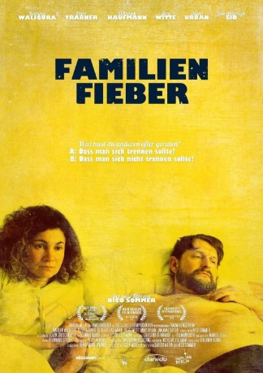

#11427 Familienfieber
 
 IMDB-Wertung: 5.6 / 10
IMDB-Wertung: 5.6 / 10  Metascore: 0
Metascore: 0 
Majas und Uwes Beziehung steckt in der Routine des Alltags fest. Alina, Tochter von Maja und Uwe hingegen ruft im Rahmen ihrer neuentdeckten Liebe Nico zum Familientreffen mit Nicos Eltern auf. Schlecht vorbereitet geht es zu einem Ort in Brandenburg – doch die geplante Familienzusammenführung hält noch Überraschungen bereit…\r Eine heimliche Affäre stört die vermeintliche Harmonie zweier Paare.
Jahr: 2014
Dauer: 77 Minuten
FSK: 0
Land: Deutschland Studio: Daredo MediaTonspuren: - , - ,
Untertitel: Englisch,
Auflösung: 1080p (1920x800) Größe: 5529 MB
Genre: Komödie
Regisseur: Nico Sommer
Drehbuch: Nico Sommer
Soundtrack:
Darsteller:
- Deborah Kaufmann als Birgit Ohnsorg
- Mario als Mario Schulte
- Jan Amazigh Sid als Nico Ohnsorg
- Peter Trabner als Uwe Roth
- Anais Urban als Alina Roth
- Kathrin Waligura als Maja Roth
- Jörg Witte als Stefan Ohnsorg
Datei: X:\2014(A-F)\Familienfieber (2014, FSK0, 1920x800).mkv seit 03.07.2019
Festplatte: HD 2013(I-Z)-2014(A-Z)
 Es gibt insgesamt 119 Filme in der Gruppe '2014(A-F)'
Es gibt insgesamt 119 Filme in der Gruppe '2014(A-F)'